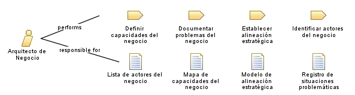

| Role: Arquitecto de Negocio |
 |
|
Relationships
 |
||
| Primary Performs | ||
|---|---|---|
| Modifies |
|
|
Main Description
| Profesional responsable de definir la estructura general del negocio desde una perspectiva estratégica, alineando procesos, capacidades y recursos con los objetivos organizacionales. Participa en la definición de modelos de alto nivel y transforma la visión empresarial en una arquitectura de procesos. |
Staffing
| Skills | Diseño de arquitectura empresarial, Alineamiento TI-Negocio, Gestión de procesos |
|---|